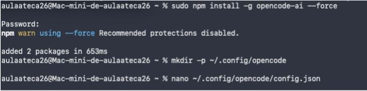
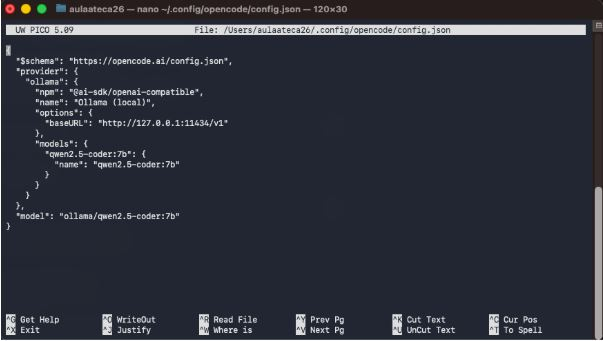
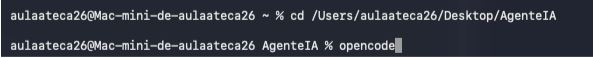
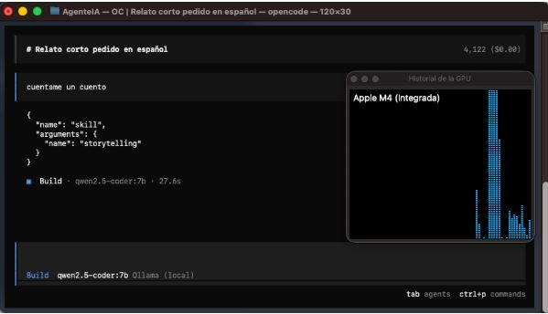

En esta práctica documento el proceso de instalación y configuración de un agente de Inteligencia Artificial local. He optado por utilizar OpenCode conectado a un modelo ejecutado localmente mediante Ollama. Esta configuración permite privacidad total y uso de la GPU local sin depender de la nube.
Lo primero que he hecho ha sido instalar la herramienta OpenCode mediante el gestor de paquetes npm. He utilizado el comando con permisos de superusuario (sudo) para asegurar una instalación global correcta.
Posteriormente, he creado el directorio de configuración necesario en la ruta del usuario y he procedido a crear el archivo de configuración JSON vacío.

Para conectar el agente con mi modelo local, he editado el archivo config.json. Aquí he definido el proveedor como "Ollama (local)" apuntando al puerto 11434.
Nota importante sobre el modelo: Aunque existen varias opciones, he configurado específicamente el modelo qwen2.5-coder:7b (como se ve en la línea 12 de la captura). He elegido este modelo en lugar del genérico porque está optimizado para tareas de código y ofrece mejor rendimiento en mi hardware local.

Una vez configurado todo y guardado el archivo, me he desplazado al directorio de trabajo en el Escritorio y he lanzado el agente ejecutando el comando opencode en la terminal. El sistema reconoce la configuración y se inicia correctamente.

Finalmente, he comprobado que el agente responde correctamente utilizando el modelo qwen2.5 que definí en el paso 2. Le he pedido una tarea creativa de prueba ("cuéntame un cuento") y ha generado la respuesta instantáneamente.
A la derecha he abierto el monitor de actividad para verificar que efectivamente se está utilizando la GPU integrada (Apple M4) durante la inferencia, confirmando que la IA corre 100% en local.
